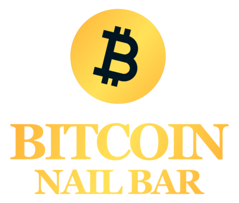

Care happens in front of the guest.
A technician needs room to focus on the person in the chair and the quality of the work in their hands.
BITCOIN NAIL BAR is the Houston salon Brian Nguyen continues to operate. Every guest visit and every busy moment behind the front desk keeps his work in technology close to the people it is meant to serve.

Operated by Brian Nguyen · First real-world pilot for NEXORA TOUCH
For more than 25 years, Brian Nguyen has worked in the U.S. nail industry. He knows a salon is more than a place for a manicure: it carries a technician's craft, a guest's trust and a family's livelihood.
BITCOIN NAIL BAR keeps him close to that reality. The salon brings beauty service and hospitality together in Houston. It is also where the team can see what a working day asks of owners and staff, long after a guest has settled into the chair.

A beautiful service depends on many small moments being handled well. Those moments are what the salon teaches us to pay attention to.
A technician needs room to focus on the person in the chair and the quality of the work in their hands.
Calls arrive, appointments shift, guests check in and owners need to understand what happened after each service.
The point of technology is to make these tasks clearer and lighter, so the people doing the service can stay present with their guests.
BITCOIN NAIL BAR is the first real-world pilot for NEXORA TOUCH. Front-desk work and guest interactions help the team test ideas against daily operations before shaping the platform for other salons.
Discover NEXORA TOUCH ↗Brian Nguyen operates BITCOIN NAIL BAR independently. Its connection to NEXORA TOUCH is the real salon experience that helps shape the platform.

His years in the nail industry gave him a reason to build technology around the people who keep it going. Operating BITCOIN NAIL BAR gives that purpose a place to be practiced and tested every day.
Read Brian's story ↗Explore current services, salon photos and visit information on the official BITCOIN NAIL BAR website.